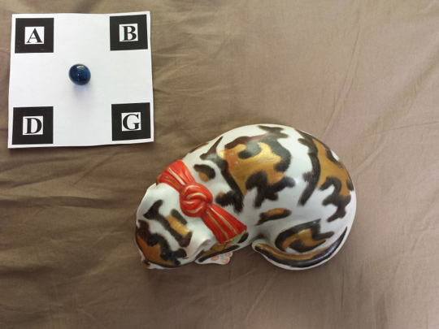
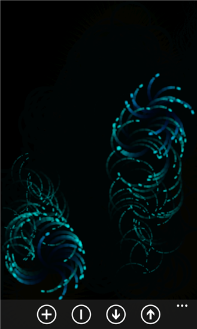
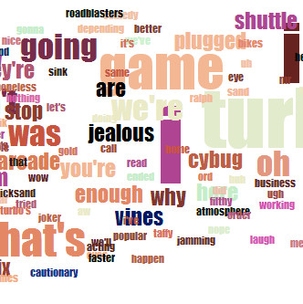
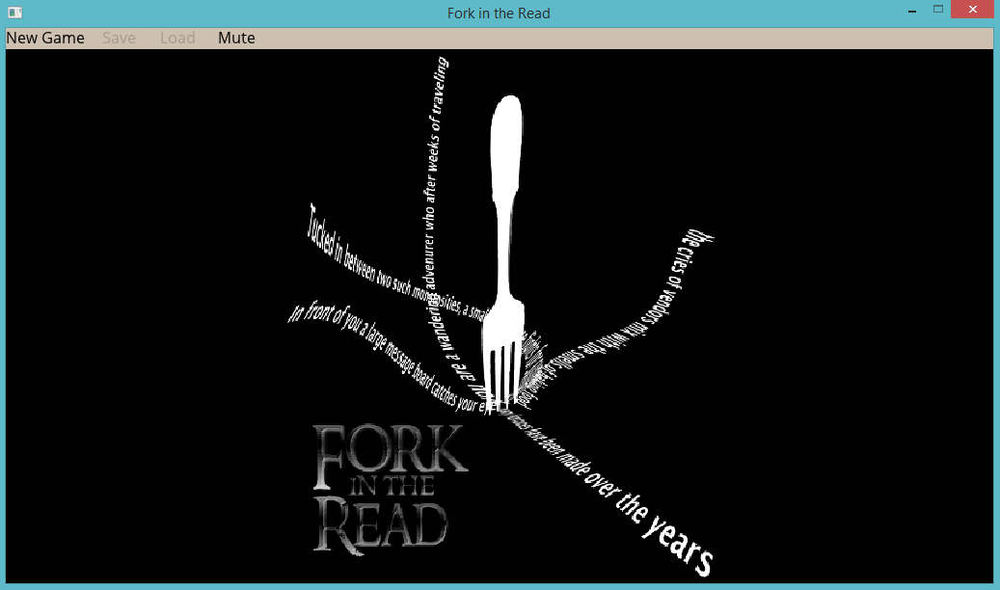
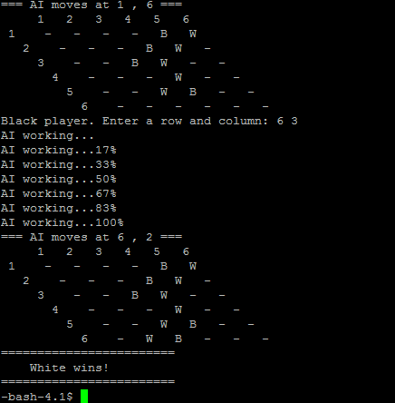
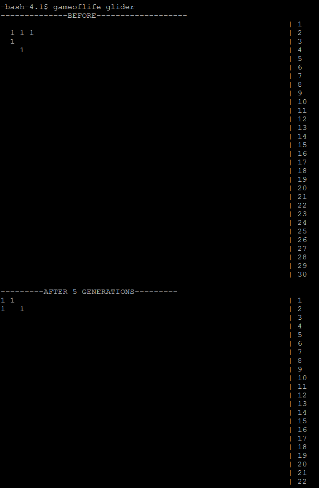
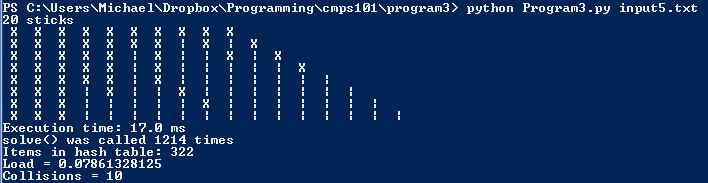

Projects
Here you will find a collection of my work. Class projects, games, experiments, etc. All files on this page are distributed via my Dropbox or Github page. Click the images for an enlarged view.
Open Source Contributions
| Sphere Recognition for CHI | Github Page |
|---|
At UCSC I took a class where non-profit organizations proposed projects for the class. We formed teams, and I worked on a 3 person team on a project for Cultural Heritage Imaging's (CHI) RTIBuilder software.
In RTIBuilder, once the user has loaded their images, they must highlight the area that contains a special sphere. Our job was to automate this step. We used a special pattern that our software will recognize in order to locate the sphere. Visit CHI's website for more details on what a RTI image is.
See the Github page for downloads, technical details, and more. We used: - C
- ARToolkit (pattern recognition)
- SDL2 (loading images)
|  |
Apps
| Particle Playground | |
|---|
This app is an interactive particle simulation with sounds to complement. You drag your fingers across the screen (or tap) to create particles. You can customize the speed and color of the particles. This is meant to simply be a calm simulation to play with. - Runs on Windows Phone 8
- Built with Monogame and Visual Studio 2012
- Added 10/17/2013
|  |
Desktop Programs
| Car Maintenance Tracker | Download
Source Code |
|---|
This little program allows you to keep track of car maintenance. You enter when you last changed the listed items as well as how often they should be changed. The next time you should perform the maintenance is listed at the right. You can save a file containing the data.
Requires .NET framework to run.
This program was orginally written in C, but it has been converted to C# with a GUI. |  |
Class Projects
| Film Clouds (Python, D3) | Github repo
Live Demo
UCSC Page
Final Paper |
|---|
This is a project that took course over the entire quarter of a Data Visualization course. My project focused on observing connections between the amount of motion in a movie (i.e. amount of action), colors, and word frequency. The program I wrote (using OpenCV-Python) extracts this information directly from the video and subtitles file of the movie.
The exact nature of the project may be a bit fuzzy, so viewing the live demo is the best way to get a sense of what is going on. The words you see are the words that were spoken in that scene. Their size relates to how often they were used. The words are colored using the colors from the scene. The amount the words shift back-and-forth relates to how much motion was in the scene. You can choose different movies and look through each chapter using the controls at the top. Change the background color by clicking the white square.
The final paper link will direct you to the final paper that was required for the class. It will go through how the entire process works, bugs/issues, etc.
Automation was a large focus of this project, so the process of extracting data is almost completely automated. Visit the wiki on the Github repo for instructions on how to analyze your own collection of movies. Analyzing a movie usually took around an hour on a Pentium powered laptop. |  |
| Fork in the Read | Download
Github Repo |
|---|
This was a team project for a software engineering course. Over the course of ten weeks we designed a game engine for creating choose-your-own-adventure type games. Games are scripted via xml files. You can integrate images, music, and sounds into your game. It is also possible to define and modify variables as a player plays your game. Conditional (if and else) statements are supported so that you can control the flow of your game.
The download link contains a sample game as well as the user manual.
Added 12/6/2013 |  |
| Game of Hex (C++) | Download
Source Code |
|---|
This is a program of the board game Hex . The white player plays from the top to the bottom, and the black player plays from left to right. Each player tries to form a pathway across the board.
The AI uses the Monte Carlo method. While the method itself seems rather stupid, the results are surprisingly intelligent. The AI is tough to beat. The AI works best on board sizes of around 5 to 11. 11 is the standard size for Hex.
This game was initially written for a class, but I wasn't happy with its performance. I re-wrote it from scratch to increase performance by fixing design issues (I used pointers way too much) and adding C++11 threading.
NOTE: You can easily compile a Unix version with the Makefile on the Github page. The above download link contains a Windows version. |  |
| Game of Life (C) | Download (Unix version) |
|---|
This program is run via a UNIX command line. Run "gameoflife [FILE]" where FILE contains info about the creature to simulate. Some samples are included.
This program simulates the classic game of life. It prints a before and after picture containing the creature after the requested number of generations.
One issue with the game of life is how to count the neighbours efficiently. One could simply scan the entire array, count the neighbours, kill/create the appropriate cells, and be done. This is horribly (O(n^2)) inefficient though. The implementation in this program uses an un-initialized array.
The live cells are placed into an empty array separate from the main board. For each generation the program looks at this array, finds the neighbouring cells, counts the live neighbours for each one, kills/creates cells, adds the new live cells to the array, and removes the dead cells. Using this method only the live cells need to be checked for each generation. This brings the running time down to O(n), where n is the number of live cells. |  |
| Crossing Matchstick Game (Python) | Download |
|---|
The rules of the game are so: You must take a match and jump two matches to cross it with another. The goal is to end up with all the matches crossed. A video of the game can be seen here: YouTube video
The program is run like any other Python program. i.e. “python Program3.py [FILE]” where FILE contains the configuration of sticks. The first line specifies how many. In the next line a 0 means uncrossed, and a 1 means two matchsticks crossed. The program will solve it and spit out a solution (in backwards order).
Hashing is used to increase the solving speed. With hashing (memoization) the same situation need not be solved over and over. A recursive solution was used first, and then hashing was used to introduce memoization. The new version of the program solved most game sizes around 17 times faster. With 20 sticks the game is solved in around 0.47 seconds with hashing and 143 seconds without. More of this info can be seen in the README file. |  |
{kind=link}
{kind=link}
{kind=link}
{kind=link}
{kind=link}
{kind=link}
{kind=link}